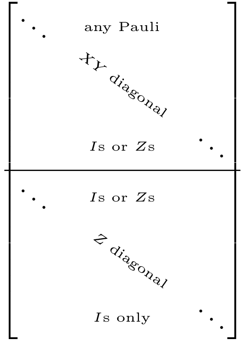
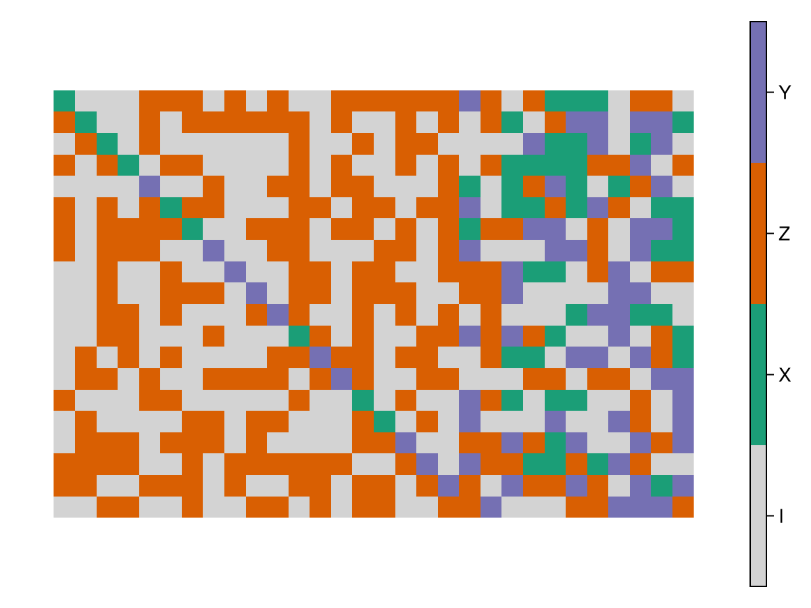
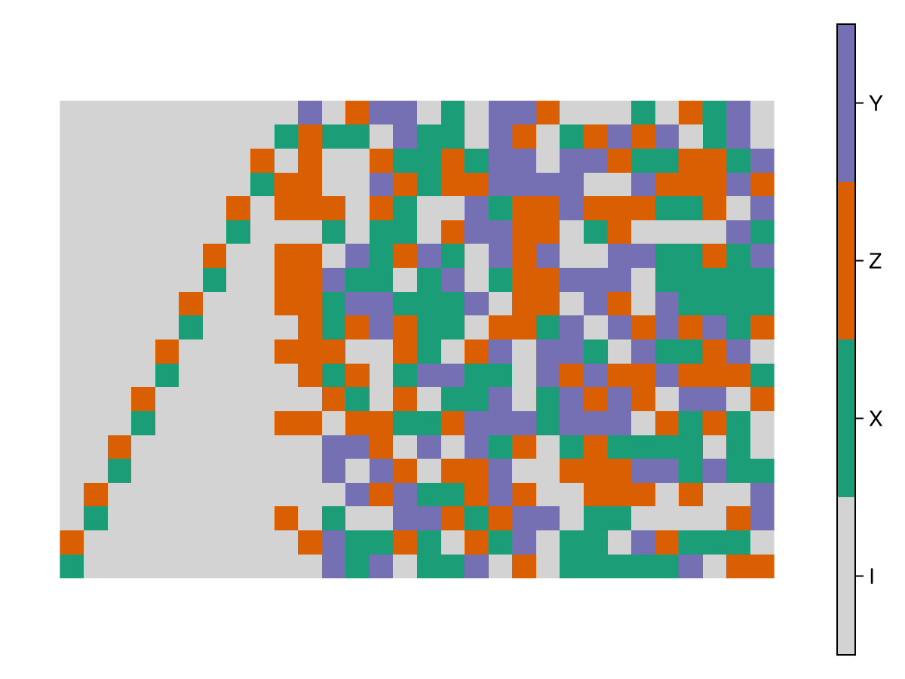
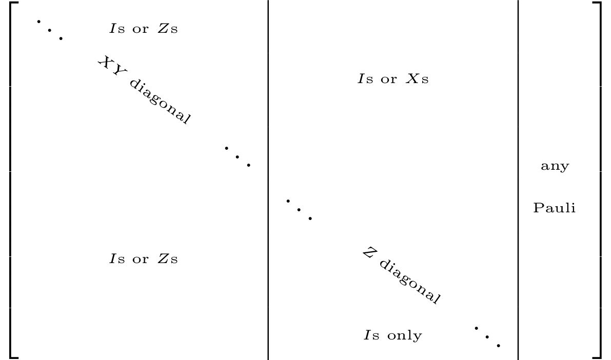
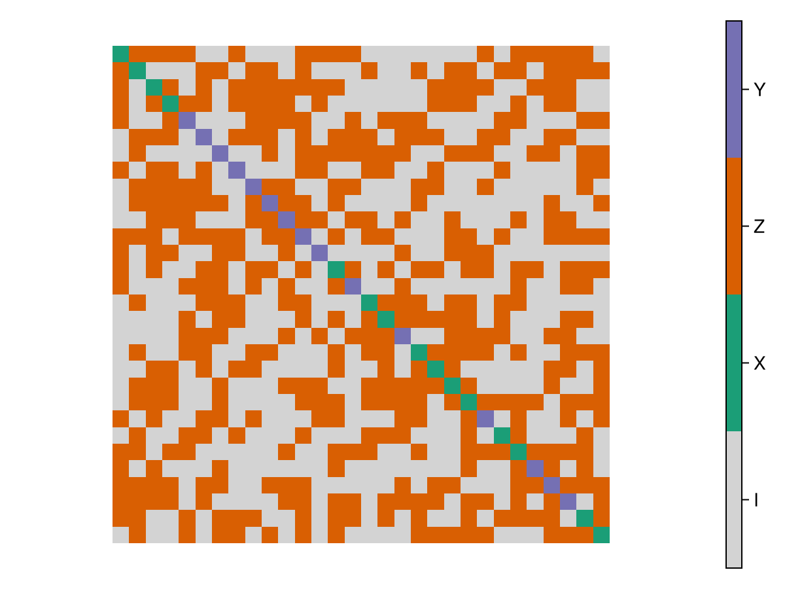
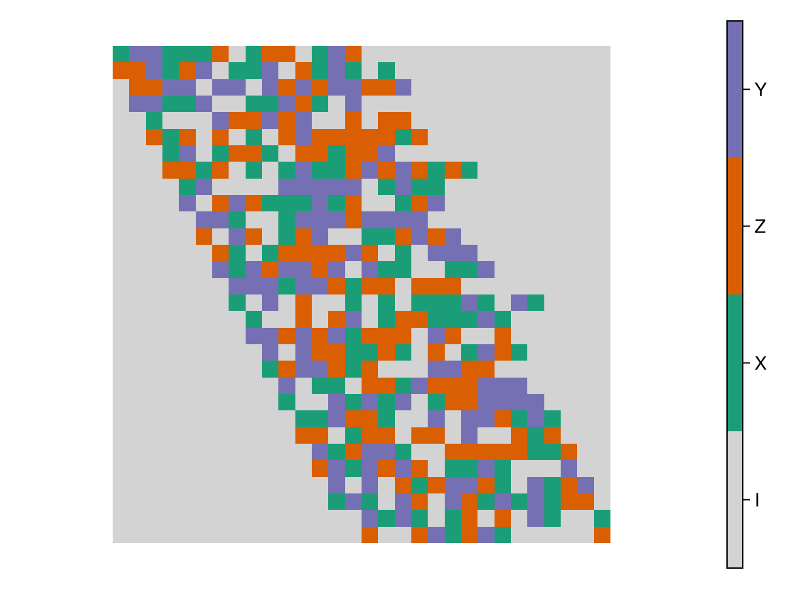

Canonicalization operations
Different types of canonicalization operations are implemented. All of them are types of Gaussian elimination.
canonicalize!
First do elimination on all X components and only then perform elimination on the Z components. Based on (Garcia et al., 2012). It is used in logdot for inner products of stabilizer states.
The final tableaux, if square should look like the following

If the tableaux is shorter than a square, the diagonals might not reach all the way to the right.
using QuantumClifford, CairoMakief=Figure()stabilizerplot_axis(f[1,1], canonicalize!(random_stabilizer(20,30)))f
canonicalize_rref!
Cycle between elimination on X and Z for each qubit. Particularly useful for tracing out qubits. Based on (Audenaert and Plenio, 2005). For convenience reasons, the canonicalization starts from the bottom row, and you can specify as a second argument which columns to be canonicalized (useful for tracing out arbitrary qubits, e.g., in traceout!).
The tableau canonicalization is done in recursive steps, each one of which results in something akin to one of these three options 
using QuantumClifford, CairoMakief=Figure()stabilizerplot_axis(f[1,1], canonicalize_rref!(random_stabilizer(20,30),1:30)[1])f
canonicalize_gott!
First do elimination on all X components and only then perform elimination on the Z components, but without touching the qubits that were eliminated during the X pass. Unlike other canonicalization operations, qubit columns are reordered, providing for a straight diagonal in each block. Particularly useful as certain blocks of the new created matrix are related to logical operations of the corresponding code, e.g. computing the logical X and Z operators of a MixedDestabilizer. Based on (Gottesman, 1997).
A canonicalized tableau would look like the following (the right-most block does not exist for square tableaux).

using QuantumClifford, CairoMakief=Figure()stabilizerplot_axis(f[1,1], canonicalize_gott!(random_stabilizer(30))[1])f
canonicalize_clip!
Convert to the "clipped" gauge of a stabilizer state resulting in a "river" of non-identity operators around the diagonal.
using QuantumClifford, CairoMakief=Figure()stabilizerplot_axis(f[1,1], canonicalize_clip!(random_stabilizer(30)))f
The properties of the clipped gauge are:
- Each qubit is the left/right "endpoint" of exactly two stabilizer rows.
- For the same qubit the two endpoints are always different Pauli operators.
This canonicalization is used to derive the bigram a stabilizer state, which is also related to entanglement entropy in the state.
Introduced in (Nahum et al., 2017), with a more detailed explanation of the algorithm in Appendix A of (Li et al., 2019).